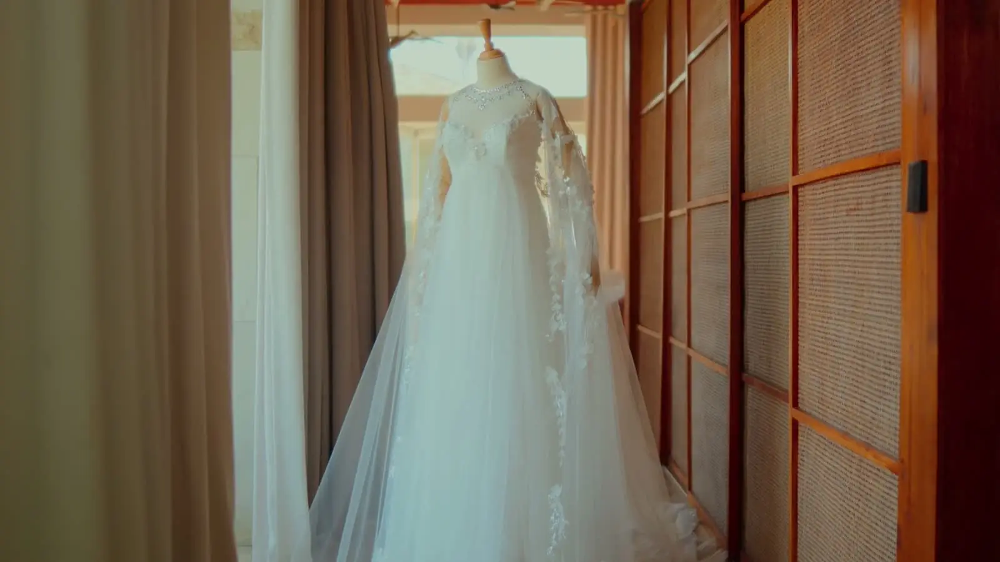
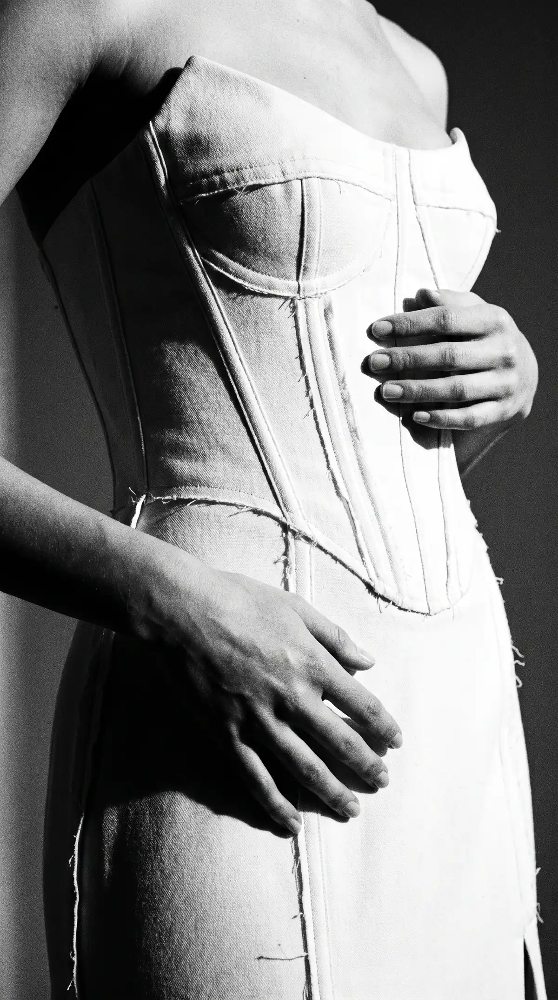
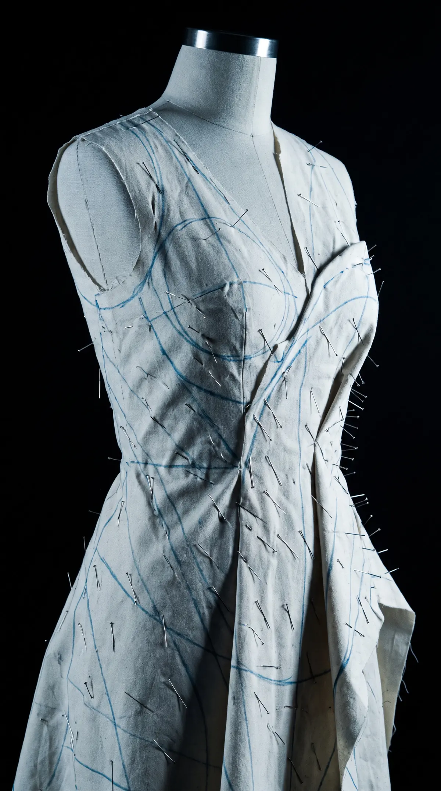
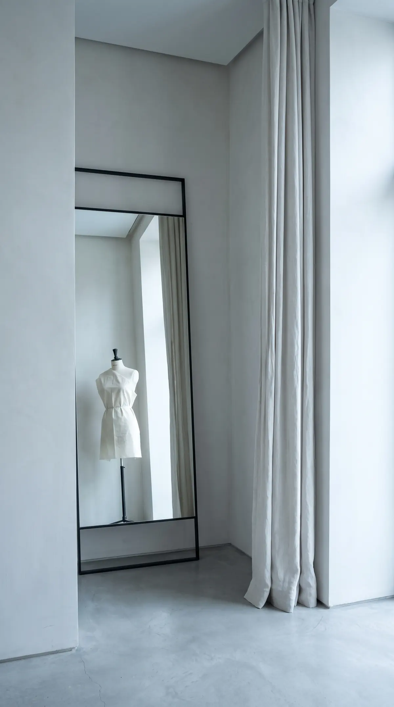
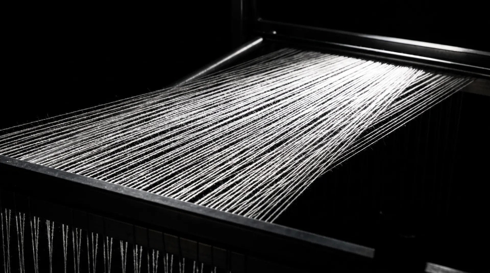

Bridal
Made to a date.
Bridal
A wedding dress is made to a date. Tell me yours, and we begin there.





One to six months, depending on the model, the design and the cloth. A wedding dress asks for more fittings than anything else I make, and I would rather have the time.
Not for a while yet? Tell me anyway.
Dresses are talked about long before they are made, and I would rather hear from you
early than late.
By appointment only · Currently Amsterdam · Online meetings welcome